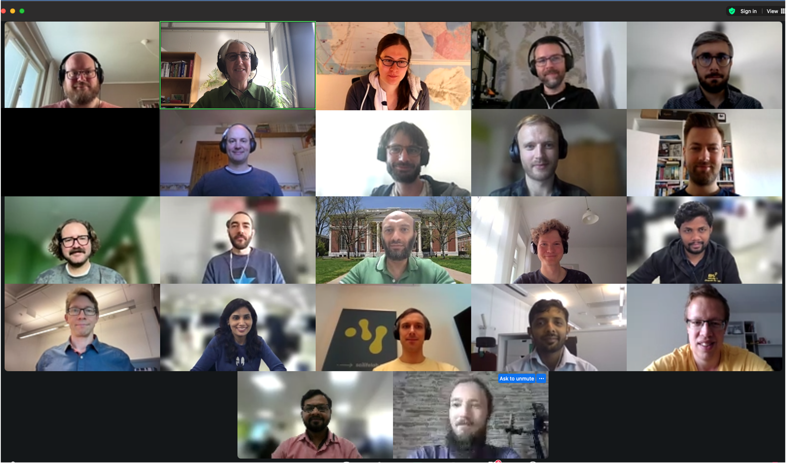
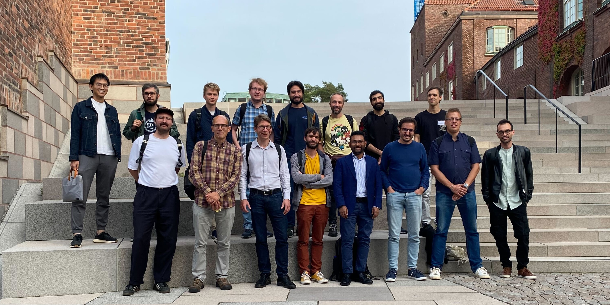

GROMACS workshop¶
Learn to code in GROMACS¶
The aim of the workshop is to provide attendees with the basis for coding in GROMACS and contributing to the GROMACS developer community. The workshop consists of lectures with Q&A sessions and hands-on sessions with mentoring and covers the following topics:
software structure and interface
GROMACS GitLab and version control
CI and testing
best practice in the GMX developer community
All the trainers and mentors belong to the GROMACS team.
Audience: This workshop is aimed at people interested in coding in GROMACS and having previous coding experience
Pre-requisites: a background in molecular dynamics simulations (preferably minimum expertise in using GROMACS), experience in programming (preferably in C++ because that is the language in which GROMACS is written), and basic Linux skills.
- Please consult the following materials, if you’re uncertain of your skills:
Linux commands, bash shell, a quiz and a link to intro course
short guide to version control with Git
GROMACS tutorial on Introduction to Molecular Dynamics
2024 Edition¶
Online - 10-12 September 2024 - from 9:00 CEST to 17:30 CEST

Lectures
GROMACS structure and interface (Mark Abraham),
GROMACS GitLab and version control (Sebastian Wingbermuehle)
Testing and testing infrastructure (Andrey Alekseenko),
Everything around coding (Berk Hess)
Panel: Andrey Alekseenko, Berk Hess, Mark Abraham and Magnus Lundborg Mentors: Amr Alhossary, Andrey Alekseenko, Berk Hess, Eliane Briand, Giacomo Fiorin, Hubert Santuz, Lukas Müllender, Mark Abraham, Magnus Lundborg, Michele Pellegrino, Vedran Miletic,
Lecture materials doi:10.5281/zenodo.13739992 or go to play list
2023 Edition¶
KTH main campus Royal Institute of Technology, Stockholm, Sweden 7-8 September 2023

Lectures
GROMACS structure and interface (Mark Abraham),
GROMACS GitLab and version control (Sebastian Wingbermuehle)
Testing and testing infrastructure (Andrey Alekseenko),
Everything around coding (Berk Hess)
Lecture materials doi:10.5281/zenodo.10276348